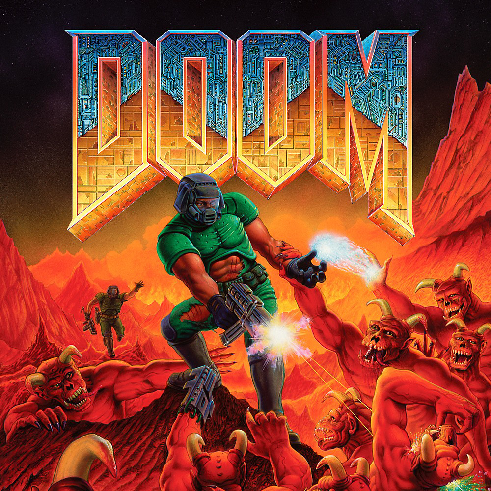

BEST OF THE BEST 1990s
1990 was a big deal, what some would argue, is the greatest era of gaming history to date. And the year was started with the Nintendo World Championships, an event nostalgically held in the collective memory of ‘80s/’90s kids. The transition from 2D to 3D was full of trials and tribulations, but it was a necessary one. Some of the former games are the pinnacle of their craft, and while some of the latter are pale versions of what would eventually be industry classics, others are still among the best ever made, despite the bad graphics.
ROLE-PLAYING GAMES
Super Mario Bros. 3 was lauded by the video game press. It was widely considered to be one of the best games released for the NES.Super Mario Bros. 3 has received universal acclaim from modern critics who consider it one of the best games of all time, and has appeared on many top games lists. The game debuted on Nintendo Power's Top 30 best games ever list at number 20.
Diablo is an action role-playing hack and slashes video game developed by Blizzard North and released by Blizzard Entertainment in January 1997. In 1998, PC Gamer declared it the 42nd-best computer game ever released, and the editors called it "a nearly flawless gaming experience". Akira Nishitani ranked it number 1 on his personal list of the greatest games of all time in 1997.
SHOOTER

Doom is a 1993 first-person shooter (FPS) game developed by id Software for MS-DOS. Players assume the role of a space marine, popularly known as Doomguy, fighting his way through hordes of invading demons from Hell. When DOOM first arrived in 1993, it was unlike anything gamers had played before – so much so that for a considerable period after its release, first-person shooters were simply known as “DOOM clones.”
Half-Life is a first-person shooter (FPS) game developed by Valve and published by Sierra Studios for Microsoft Windows in 1998. It was Valve's debut product and the first game in the Half-Life series. Half-Life has a score of 96 out of 100 on the aggregate review website Metacritic. Computer Gaming World's Jeff Green said that the game "is not just one of the best games of the year. It's one of the best games of any year".
SPORTS
A sports game is a video game genre that simulates the practice of sports. Most sports have been recreated with a game, including team sports, track, and field, extreme sports and combat sports. Some games emphasize actually playing the sport (such as NBA Jam). NBA Jam (sometimes "Jam" for short) is a long-running basketball video game series based on the National Basketball Association (NBA). Initially developed as arcade games by Midway, the game found popularity with its photorealistic digitized graphics, over-the-top presentation, and exaggerated style of two-on-two basketball play.
STRATEGY

StarCraft is a 1998 military science fiction real-time strategy game developed and published by Blizzard Entertainment for Microsoft Windows. The game spawned the StarCraft franchise, and became the first game of the video game series.
▲